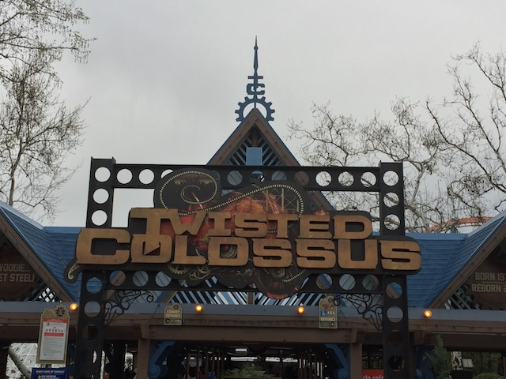
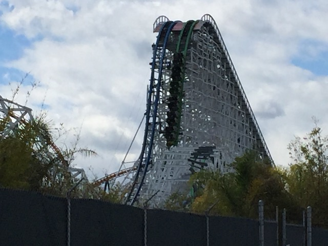
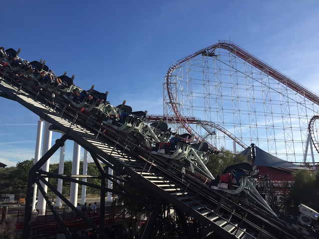
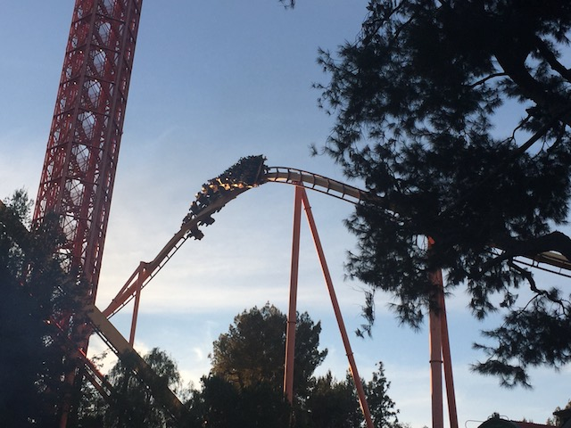
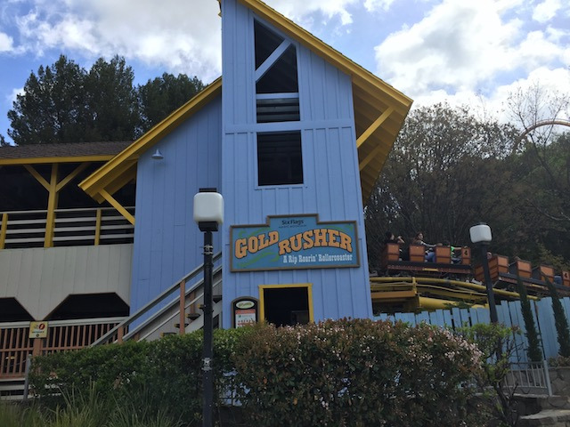
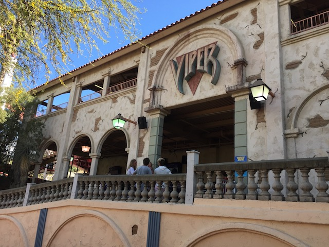
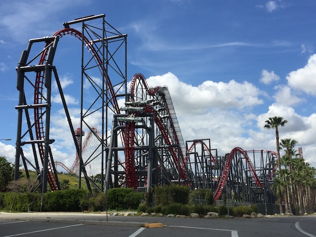
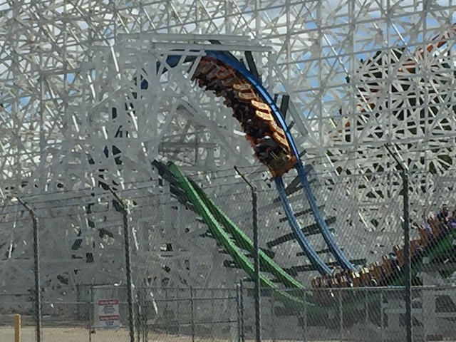
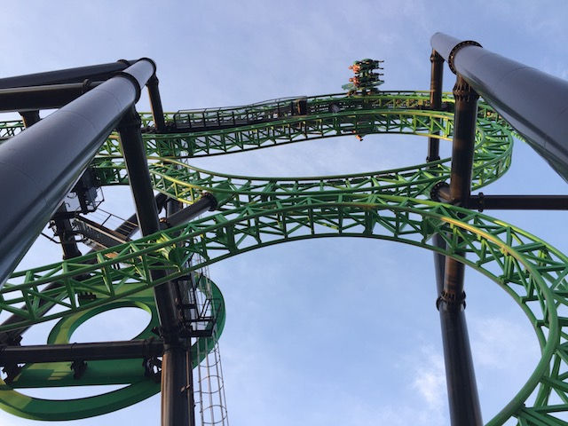

| |
Six Flags Magic Mtn Spring 2017
All right. Time for another update. We're back at Six Flags Magic Mountain to cover a couple visits that we took in the Spring (and one in the winter as well). So here's some fun from those days. Oh, and Geoffrey Sonic says Hi.
*rubs eyes in disbelief* Does...Does Six Flags Magic Mountain still have their Halloween decorations up? In February!?
Yep. And not only that, the Christmas decorations are still up as well.
HEY MAGIC MOUNTAIN! IT'S F*CKING FEBRUARY! TAKE DOWN THE CHRISTMAS DECORATIONS! Ugh. This is as lazy as it gets.
Construction update on Justice League.
♫Mr. Bluebird on my shoulder♫
Maybe then you'll actually be able to get on the ride without waiting in an insanely long line.
 X2 is always fun. Riding it in the rain only makes it better. =)
X2 is always fun. Riding it in the rain only makes it better. =)

Gotta grab a quick ride on Twisted Collosus before heading home.

HOLY SH*T!! We overshot the brakes, so we got to go again so it could go in the station properly. HOORAY FOR BONUS DOUBLE RIDE!!! BEST F*CK UP EVER!!!! =)
All right. Time for Visit #2. And yeah. It's crowded today. Really freaking crowded today. Yeah. You see that traffic? That's to get into the park. The line backed up all the way to the f*cking Wendys. Fun fact. It took longer for me to get from the Wendys to my parking spot than it did for me to get from Ventura to the Wendys. Just think about that for a second. Seriously some of the worst traffic I've ever had to endure in my life.
The only reason I didn't turn around then and there and waited out the line is because a friend from Florida was here today. And hey, I did have fun.
Does the steampunk engine count as a credit?
 If the meatball is meatless, then it's not a meatball. Call it a veggieball or whatever you vegetarians want. But it's not a meatball. You don't get to call anything a meatball that doesn't have meat. ;)
If the meatball is meatless, then it's not a meatball. Call it a veggieball or whatever you vegetarians want. But it's not a meatball. You don't get to call anything a meatball that doesn't have meat. ;)
 OK Sean. Forget about the other unique rides. Gotta prioritize Goliath because you just want to compare it to Titan @ SFOT that badly. =)
OK Sean. Forget about the other unique rides. Gotta prioritize Goliath because you just want to compare it to Titan @ SFOT that badly. =)
I know you don't have time to go outside the park and find some random resteraunt, but you can do better than the Full Throttle Sports Bar (actually, with how slow the service is here, it might've been faster to just go to Jimmy Deans or some other local place).
OK. This was my first time actually eating in the Full Throttle Sports Bar. I went in here once to drink beer during Holiday in the Park. But I'd never actually eaten here. I just know that it got really bad reviews on Yelp. Eh, the food wasn't THAT bad. Yeah, it's not that great. But it's not any worse than something like Wascals, or the Waterfront Grill, or Food Etc. I can certainly tell you that they liked spicy foods as nearly everything on the menu was something spicy. Hell, this place actually served spicy ketchup. Until now, I didn't know of any place that had that aside from Whataburger, which is pretty much only in Texas. And I like spicy ketchup. But to be fair, most of the 1 star reviews on Yelp were talking about how slow and crappy the service was. And on that front, yeah. I agree 100%. The service is awful here.
What's the only thing worse than Sean with a knife? Sean with two knives. Yeah. This'll end badly.

Yeah. When visiting with a friend from Florida, you're doing X2. It's too damn good and too damn unique to skip. Doesn't matter what the line is like.
"Is everybody in? The ceremony is about to begin."

All right. Only time for one more ride. Might as well make it Tatsu.
"Hey Andrew! I got on Tatsu!" =P
"I even thought about buying this Tatsu shirt, just to rub it in. But nah. That'd just be too mean. I'm too nice to do that."
And finally, we're on Visit #3. I see you Goliath extension track that they had to build.
This is why I always recommend doing the back of the park first.
 No matter how busy the park gets, the line for Scream is never too bad (Especially in the morning, when the back of the park is dead).
No matter how busy the park gets, the line for Scream is never too bad (Especially in the morning, when the back of the park is dead).
 Scream is always running good.
Scream is always running good.
Another update on Justice League. Wonder how much is actually done inside the building.
 Hopefully this'll be a really fun dark ride.
Hopefully this'll be a really fun dark ride.

Hey look! They painted the entrance to Goldrusher. I'm assuming its for when Justice League gets redone. But there's no denying that it looks much better.
 HA HA! Ninja got stuck on the lifthill! Well, I rode it earlier that day, so not my problem. =)
HA HA! Ninja got stuck on the lifthill! Well, I rode it earlier that day, so not my problem. =)
Yes. Let's climb up the stairs to Samauri Summit, only to get on the Orient Express (still calling it that. Not adapting the corporate name, Helpful Honda Express. It's all just another ad) to go back down the mountain you just climbed up, and you could've just walked to the front and it would've taken less time. Yeah. That sounds like a great idea! =)
OK. Magic Mountain seriously has to do something about New Revolution. Yeah, it's much better now, but the VR has to go. Yeah, it was fun the first time and I don't hate the VR nearly as much as other people. Hell, part of me wants to try the new VR program. However, the VR always causes it to have a line that's 4-5 hours long. Are you f*cking kidding me!? I don't want to wait in a line that's going to take nearly as long to wait in as it'd take me to drive up to NorCal!! That's simply unacceptable! No coaster is worth that wait! Not even El Toro! The VR has got to go!
OK. The amount of microtrash on Magic Mountain Pkwy is depressing. I can't count the number of times I saw bits of broken glass. I had to constantly look down, in fear of stepping on broken glass. Part of me wants to just spend a day picking up all the trash from Wendys to the park.
I found some random dudes meds! I wonder what they'll do to me. Only one way to find out *gulp*.

Yeah. That line for Viper is way too damn long, but nearly everything has a disgusting line like that at this point. Plus, it's not too bad.
 Really love that these big Arrow Mega Loopers are still running. Yeah, they can be a little rough, but they're still a ton of fun.
Really love that these big Arrow Mega Loopers are still running. Yeah, they can be a little rough, but they're still a ton of fun.
Ugh. Was hoping to kill time waiting for one of my favorite coasters. Guess I'll have to find another coaster to mindlessly wait in line for to kill time.
DAMN IT!!! FULL THROTTLE IS CLOSED TOO (Wait. Why do I care about Full Throttle?)!!!
ARE YOU F*CKING KIDDING ME!? NOW EVERYTHING IS CLOSED!!!
Just a quick reminder as to why you should never try going to Six Flags Magic Mountain when it's Spring Break.
When you not only decide to ride Wonder Woman to kill time, but have to wait for it as well, you know things in the park have gotten really bad.

Well X2 opened back up. And thanks to Cody getting exit clearance since it was his last day working here (Again. He's now had 2 last days at SFMM), we were able to ride it today.

And hey. Exit clearance also got us on Twisted Collosus. Hooray for instant access to the best coasters in California. =)

Riding Green Lantern is stupid enough. But riding Green Lantern when you're sore with a cliff jumping hangover from jumping the 70ftr the day before (Feels so good to be jumping that thing again), it makes the ride so much worse. OUCH! WHY THE F*CK DID I DECIDE TO DO THIS WITH A CLIFF JUMPING HANGO---OUCH!!!
And finally, we decided to do Slingshot with free tickets that Cody got. Kind of sad that this is almost certainly the last ride I'll ever have on Slingshot as today was a reminder of just how much I really like that ride.
Home
|